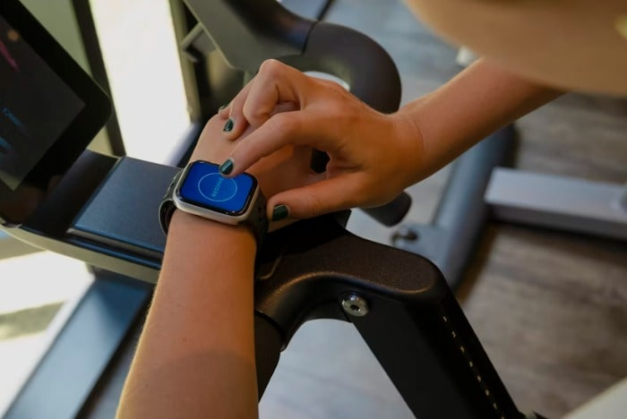

A Revolução do Bem-Estar Personalizado: A Vanguarda Holística com Tecnologia e IA
Como **Luandesson Alves**, terapeuta holístico e estudante de **Alquimia Consciencial**, **Física Quântica** e **Engenharia de Software** pela **42 Rio**, vejo um futuro onde a **saúde e o bem-estar** não são apenas cuidados, mas uma experiência profundamente **personalizada** e **consciente**. A era em que a tecnologia nos distanciava do nosso eu interior está dando lugar a uma **revolução do bem-estar** que nos convida a uma **conexão profunda** com nossa verdadeira essência, potencializada pela **Inteligência Artificial** (IA).
Integrando Sabedoria Antiga e Inovação Futurista
Meu propósito é claro: **integrar tecnologia, saúde e bem-estar de forma consciente e transformadora**. Acredito no poder de unir **mente, corpo e emoções** para alcançar **equilíbrio, clareza e liberdade interior**. A **Física Quântica** nos ensina que somos energia e vibração; a **Alquimia Consciencial** nos guia na transmutação interna. Quando aplicamos esses princípios com a precisão da **Engenharia de Software**, criamos um caminho único para o autoaperfeiçoamento.
Imagine algoritmos de IA que analisam seus padrões de sono, níveis de estresse e até mesmo sua resposta emocional a certas situações. Com base em **práticas integrativas** e **autoconsciência**, essa análise pode sugerir meditações específicas, rotinas de exercícios adaptadas ou até planos alimentares que ressoam com sua constituição energética única. Não é sobre a tecnologia nos controlar, mas sobre ela nos fornecer dados para uma **decisão consciente** e empoderada.
O Fitness de Elite e o Bem-Estar Acessível
O conceito de **fitness luxo e elite** não está mais restrito a academias exclusivas. A **tecnologia** está democratizando o acesso a práticas e conhecimentos antes restritos. Com a personalização impulsionada pela IA, cada indivíduo pode ter um "personal holistic" no bolso, adaptando treinos, mindfulness e nutrição às suas necessidades em tempo real, em qualquer lugar do mundo. Isso é luxo: ter a ferramenta perfeita para sua **realização, propósito e presença**.
Minha abordagem visa ajudar pessoas a superarem estados como **ansiedade e depressão**, reconectando-as com o **momento presente** e com sua **verdadeira essência**. A tecnologia, quando utilizada com discernimento, pode ser uma ponte para essa reconexão, oferecendo suporte contínuo e feedback para a jornada de autodescoberta.
Seu Caminho Real de Transformação
Não se trata de substituir a intuição pela máquina, mas de amplificar a intuição com dados. A IA e as ferramentas tecnológicas se tornam aliadas poderosas em sua jornada de bem-estar, oferecendo insights, personalização e um suporte que antes era inimaginável. O futuro do bem-estar é agora, e ele é inteligente, holístico e profundamente seu.
Estou aqui para guiar você nesse caminho onde a vanguarda tecnológica encontra a sabedoria milenar, criando um projeto de vida onde você é o arquiteto da sua própria saúde e felicidade. **Desperte seu código original** e venha construir essa realidade de **equilíbrio, clareza e liberdade interior**.